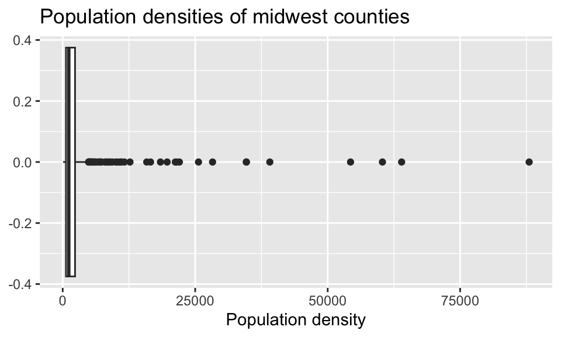
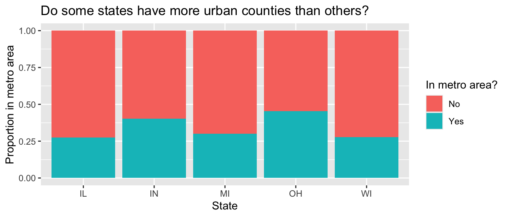
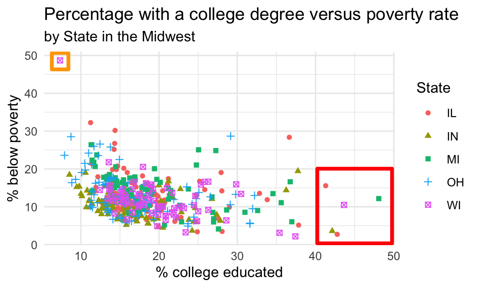

DS002R - HW 3 - Wrangling
due Tuesday, Sep 24, 2024
Part 1
Back to the Midwest!
In this part you will revisit and build on some of your findings from HW 2, where you explored the midwest data frame. Remember that this data frame is bundled with the ggplot2 package and is automatically loaded when you load the tidyverse package. As a refresher, the data contains demographic characteristics of counties in the Midwest region of the United States. You can read documentation for the data set, including variable definitions by typing ?midwest in the Console or searching for midwest in the Help pane.
Note
The data in the midwest data frame are from the 2000 census, so the information you compute below is likely slightly different from the values today.
Question 1
Calculate the number of counties in each state and display your results in descending order of number of counties. Which state has the highest number of counties, and how many? Which state has the lowest number, and how many?
Question 2
Within a state, two counties can’t have the same name, but across states county names can be shared. A friend says “Look, there is a county called XYZ in EVERY state in this dataset!” In a single pipeline, discover all counties that could fill in the value of XYZ. Your output should be a data frame with two columns: county and the number of times they appear in the data.
Tip
You will want to use the filter() function in your answer, which requires a logical condition to describe what you want to filter for. For example filter(x > 2) means filter for values of x greater than 2, filter(y <= 3) means filter for values of y less than or equal to 3.
| operator | definition |
|---|---|
< |
less than |
<= |
less than or equal to |
> |
greater than |
>= |
greater than or equal to |
== |
exactly equal to |
!= |
not equal to |
x & y |
x AND y |
x | y |
x OR y |
is.na(x) |
test if x is NA |
!is.na(x) |
test if x is not NA |
x %in% y |
test if x is in y |
!(x %in% y) |
test if x is not in y |
!x |
not x |
The table above is a summary of logical operators and how to articulate them in R.
Question 3
Consider the following box plot of population densities where you were can see some counties have extreme values.
Identify the counties described in each part:
The counties with a population density higher than 25,000. Your code must use the
filter()function.The county with the highest population density. Your code must use the
max()function.
Note
Answer using a single data wrangling pipeline for each part. Your response should be a data frame with five columns: county name, state name, population density, total population, and area, in this order. If your response has multiple rows, the data frame should be arranged in descending order of population density.
Question 4
Let’s say that you want to describe the distribution of population densities. The following is one acceptable description (in words) that touches on shape, center, and spread of this distribution. Create a plot that fits the description, and calculate the values that should go into the blanks.
The distribution of population density of counties is unimodal and extremely right-skewed. A typical Midwestern county has population density of ____ people per unit area. The middle 50% of the counties have population densities between ___ to ___ people per unit area.
Tip
Think about which measures of center and spread are appropriate for skewed distributions. That is, there is a right answer for the choice of functions you use to calculate the center and spread.
Question 5
Recall the visualization from HW 2 that showed the proportion of urban counties in each state.
midwest <- midwest |>
mutate(metro = if_else(inmetro == 1, "Yes", "No"))
ggplot(midwest, aes(x = state, fill = metro)) +
geom_bar(position = "fill") +
labs(
title = "Do some states have more urban counties than others?",
x = "State",
y = "Proportion in metro area",
fill = "In metro area?"
)
In a single data pipeline, calculate the proportion of residents in a metro area for each state.
Question 6
Return to the following scatter plot of percentage below poverty vs. percentage of people with a college degree, where the color and shape of points are determined by state. Recall that you were asked to identify (by name) at least one county that is a clear outlier.

In a single pipeline, identify the observations marked in the orange square on the upper left corner. Your answer should be a data frame with four variables: county, state, percentage below poverty, and percentage college educated.
In a single pipeline, identify the observations marked in the red square in the plot above. Your answer should again be a data frame with four variables: county, state, percentage below poverty, and percentage college educated.
Bring your answers from part (a) and part (b) together! In a single pipeline, and a single
filter()statement, identify the observations marked in the red and orange square in the plot above. Your answer should again be a data frame with four variables: county, state, percentage below poverty, and percentage college educated.Create a new variable in
midwestcalledpotential_outlier. This variable should take on the value:
Yesif the point is one the ones you identified in part (c), i.e., one of the points marked in the squares in the plot above.Nootherwise.
Then, display the updated midwest data frame, with county, state, percentage below poverty, percentage college educated, potential_outlier as the selected variables, arranged in ascending order of potential_outlier. (Hint: look above and/or recall how metro was calculated using the function if_else().)
- Recreate the visualization above, i.e. a scatterplot of percentage below poverty vs. percentage of people with a college degree, however color the points by the newly created
potential_outliervariable instead of state.
Question 7
In a single pipeline, calculate the total population for each state and save the resulting data frame as
state_populationand display it in descending order of total population.Then, in a separate pipeline, calculate the proportion of the total population in each state (e.g., find the percent of people living in WI out of all the people in the midwest) and, once again, display the results in descending order of proportion of population.
Tip
In answering parts (a) and (b), you’ll create two new variables, one for total population and other for proportion of total proportion. Make sure to give them “reasonable” names – short but evocative.
- Which Midwestern state is most populous and what percent of the Midwest population lives there? Which is the least populous and what percent lives there?
Question 8
Calculate the average percentage below poverty for each state and save the resulting data frame as state_poverty with the columns state and mean_percbelowpoverty.
Then, in a new pipeline, display the state_poverty data frame in ascending order of mean_percbelowpoverty. Which state has the lowest average percentage below poverty across its counties? Which state has the highest average percentage below poverty across its counties?
Part 2
Poor nameless kitties in Seattle
Use the seattlepets dataset from the openintro R package to do some wrangling:
Question 9
How many pets are included in the dataset? (Print the answer to the screen, show the R code which is your work, and write a complete sentence with the answer.)
How many variables are there for each pet? What are the names of the variables? Again, show your work using R code (not the Viewer or the Environment) and write a complete sentence.
What are the three most common pet names in Seattle? (You’ll need to use the function
n()which counts the number of rows.)
Question 10
What are the three most common names for each of the cat and dog species? Your initial code may only tell you about dogs (and the poor unnamed kitties). The
slice_family of functions pulls out a specified number of rows. For example,slice_min()pulls out the smallest rows,slice_max()pulls out the largest rows,slice_head()pulls out the first row, … (see the cheatsheets! https://www.rstudio.com/resources/cheatsheets/).I’ve added a new column to the dataset which gives the proportion of a particular species with the given name. Create a scatterplot of the 20 most popular pet names (as measured by the max proportion of the species with that name - the value calculated below). The x-axis will represent the proportion of cats with that name, the y-axis will represent the proportion of dogs with that name.
seattlepets_w_prop <- seattlepets |>
group_by(species, animal_name) |>
summarize(n_names = n()) |>
mutate(prop_names = n_names / sum(n_names)) |>
ungroup()
head(seattlepets_w_prop)# A tibble: 6 × 4
species animal_name n_names prop_names
<chr> <chr> <int> <dbl>
1 Cat "\"Mama\" Maya" 1 0.0000578
2 Cat "\"Mo\"" 1 0.0000578
3 Cat "'Alani" 1 0.0000578
4 Cat "-" 1 0.0000578
5 Cat "1" 1 0.0000578
6 Cat "2" 1 0.0000578Hint 1: you’ll need to pivot_ (wider or longer?)
Hint 2: after pivoting, you’ll need to sort based on the proportion. But you have two columns of proportions! Sort on the maximum of the two columns. In order to do a piece-wise maximum (element by element) in your mutate() call, use the function pmax(first column, second column, na.rm = TRUE).
Hint3: after you get the basic scatterplot made, clean it up in the following ways:
- add pet name labels using
geom_text()[Or better, usegeom_text_repel()in ggrepel] - add the line y = x using
geom_abline() - make the x-axis label something better
- remove the y-axis label and use the title to provide the y-axis (so that the letters are written horizontally instead of vertically)
- remove the poor kitties that don’t have a name